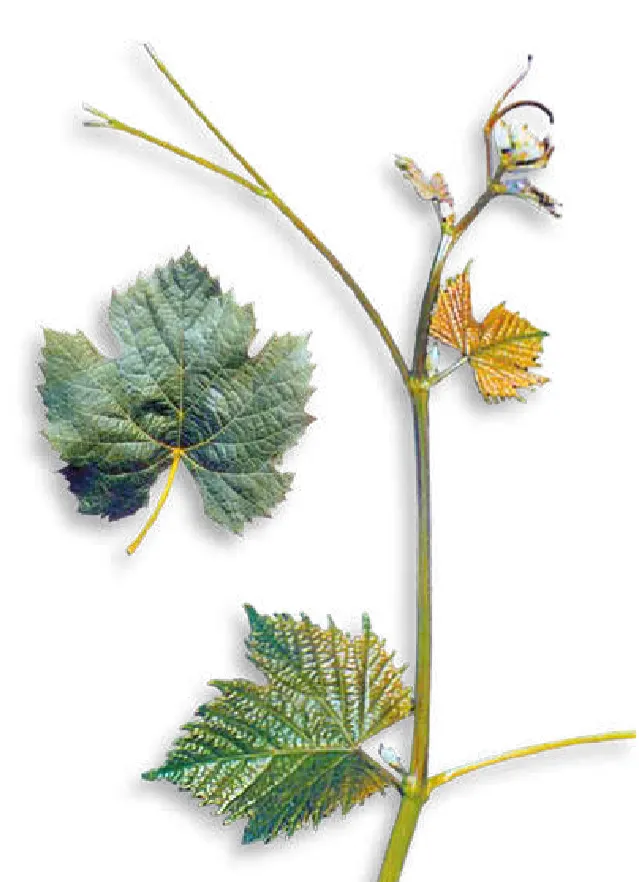

Chapter 3 · The Portuguese grape varieties
Tinta Barroca (R)
Origin:
It is a variety from the Douro and one of the most widely planted in the Douro and one of the five grape varieties recommended for making Port.
Wine description
It has a horizontal aroma in that it has a languorous nose, mellow, delicate; almost an invitation to immerse oneself in it. Compared to the Roriz, the wine has an open, feminine, aromatic aspect. In more humid regions, it often has a floral bouquet (N. Almeida). Wine quality varies greatly from place to place.
Regional classification:
DOC quality wine: Porto, Douro, Alenquer, Torres Vedras, Tejo.
Regional wine: Minho, Trás-os-Montes, Estremadura, Tejo, Terras do Sado, Alentejano.
Morphology
Young shoot (form of tip): Open, with medium and strong anthocyanin colouration, hairs generally of low density.
Young leaf: Yellow-copper, with medium anthocyanin colouration. Hairs of medium density.
Young shoot: Nodes and internodes with red stripes on the dorsal side, buds with weak anthocyanin colouration. Long tendrils.

Inflorescence (sex of flower): Hermaphrodite.
Mature leaf: Medium, pentagonal, three or five lobes, bright green, irregular profile, slight blistering of upper side of blade, with undulation at the base of the petiolar sinus, rectilinear teeth of medium size, very open V-shaped petiolar sinus, open V-shaped upper lateral sinuses, erect hairs of medium density and sparse prostrate hairs on lower side of blade.
Bunch: Medium to large size, loose. Medium to long poorly lignified peduncle.
Berry: Medium, short, elliptic, blue-black, skin of medium thickness, medium bloom, flesh colourless, soft and very juicy, medium pedicel.
Phenology:
Time of bud burst: 2 days after the Castelão.
Flowering: Early, 2 days after the Castelão.
Berry (colour change): Very early, 9 days before the Castelão.
Berry (harvest ripe): Normal, one week after the Castelão. Vegetative and agronomic potential:
Vigour of shoot growth: High.
Pruning weight: 1.0 kg–1.4 kg per vine.
Shoot attitude (habit): Semi-erect and plagiotropic.
Length of internodes: Long.
Shoot length: Some shoots very long and drooping.
Tendency to form lateral shoots: Medium to high.
Rate of multiple bud bursts: Fairly low.
Bud fertility index: 1 = 1.4; 2 = 1.8; 3 = 1.9 flowers per shoot.
Yield: High to Very high (8–16 t/ha), Depending on clone and environmental conditions. RNSV statistical value: 1.46 kg/vine (Average of at least 40 clones in Vila Flor over 6 years).
Yield consistency: Risk of millerandage. Medium yield in the year following a high yield.
Crop uniformity: Uniform, with good yield on all vines. In years of excessive yield homogeneity may be reduced (12–25 t/ha).
Winkler Index: 1,413 for a 16 t/ha yield (Montemor).
Sensitivity to abiotic factors: Sensitive to extreme heat with simultaneous water deprivation; results in bunch dryness.
Susceptibility to fungal diseases: Susceptible to Peronospora and Oidium. Tolerant of Botrytis because of its loose bunches. Moderate susceptibility to Excoriosis.
Bunch size: Medium to large (250 g).
Bunch density: Low.
Berry skin: Thin.
Training system: Suitable for all traditional training systems.
Soil requirements: Deep, fertile soils, with some humidity; responds very well at high elevations.
Climatic requirements: A steep rise in alcohol content during veraison can lead to extreme overripening in very hot and dry zones.
Irrigation: Risk of excessive yield with concomitant ripening problems.
Incidence of coulure/millerandage: Susceptible.
Spoilage of mature berries: Risk of overripening.
Machine harvest suitability: Well suited, during extreme heat.
Oenology:
Wine type: Quality wine, dessert wine.
Potential alcohol content: High (13–15% vol.) in favourable conditions. RNSV statistical value: 14.56% vol. (Average of at least 40 clones in Vila Flor over 4 years).
Natural acidity of must: Medium (4–6 g/l). (RNSV statistical value: 3.496 g/l (Average of at least 40 clones in Vila Flor over 4 years).
Total anthocyanins: 580–780, depending on clone and environment. (RNSV statistical value: 806.57 mg/l (Average of at least 40 clones in Vila Flor over 1 year).
Total phenols index (at 280 nm) of must: 31–36. (RNSV statistical value: 56.04 (Average of at least 40 clones in Vila Flor over 4 years).

Risk of oxidation of must: Low.
Color intensity of wine: 6.60 – 7.20. Medium. Berry skin has high anthocyanin colouration. Appears to lose colour with ageing.
Wine colour tonality: 0.54–0.64. Even aged wines retain ruby colour.
Tannins: Monomeric 1.3–1.7 mg/l; Oligomeric 1.1–3.7 mg/l; Polymeric 4.3 – 10.9 mg/l (when fermented with must).
Total polyphenol index (at 280 nm): 21.
Risk of oxidation of wine: Low.
Aromatic profile: (According to research in the Douro, in 1999) Exceeded expectations with a high concentration of free terpenes (90 μg/l), responsible for the floral aromas. It had a ß-damascenone content of over 2μg/l and some norisoprenoídes. In comparison to other red varieties of the Douro, sensorial values, including those of balance and persistence in the mouth, are the best of the wines classified in the region thus far.
Ageing potential: Good overall, with particular suitability for barrel ageing.